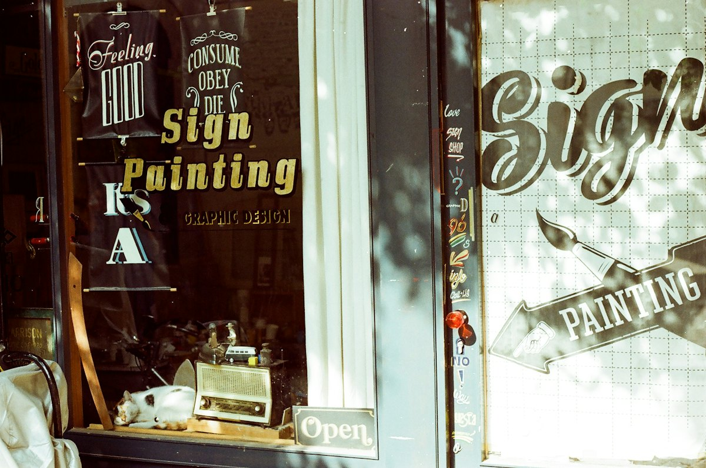
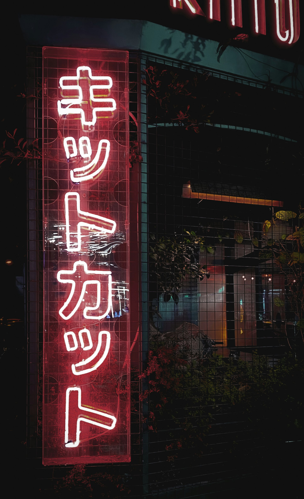
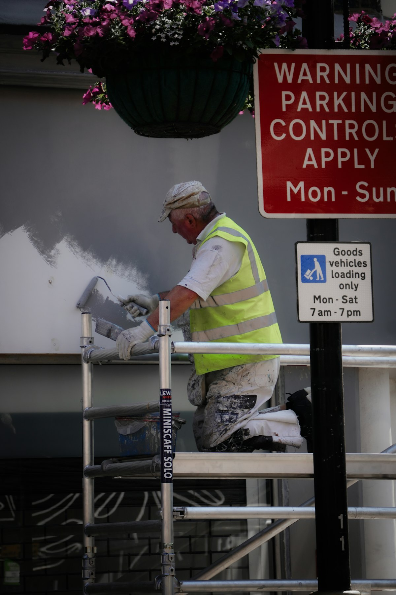
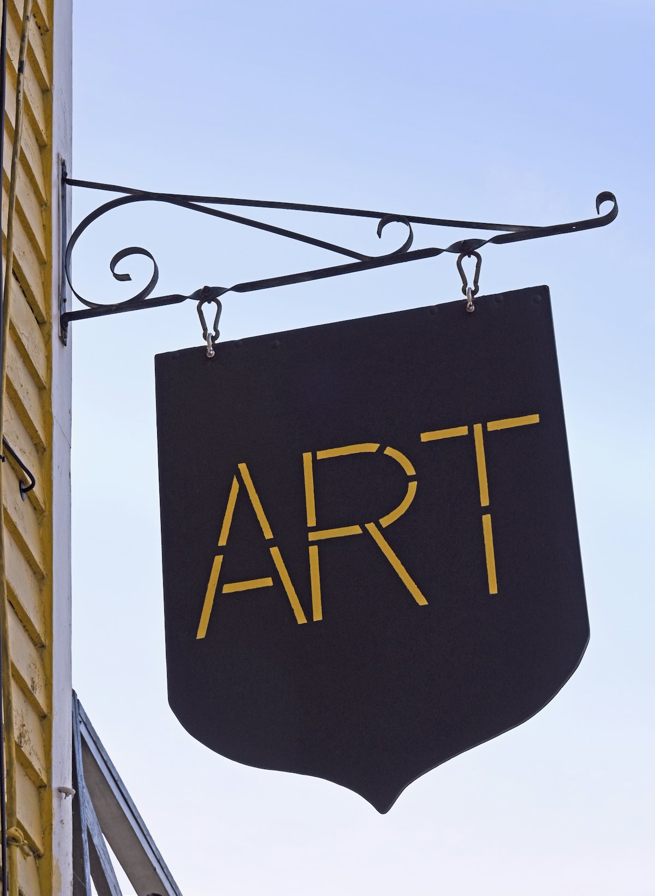
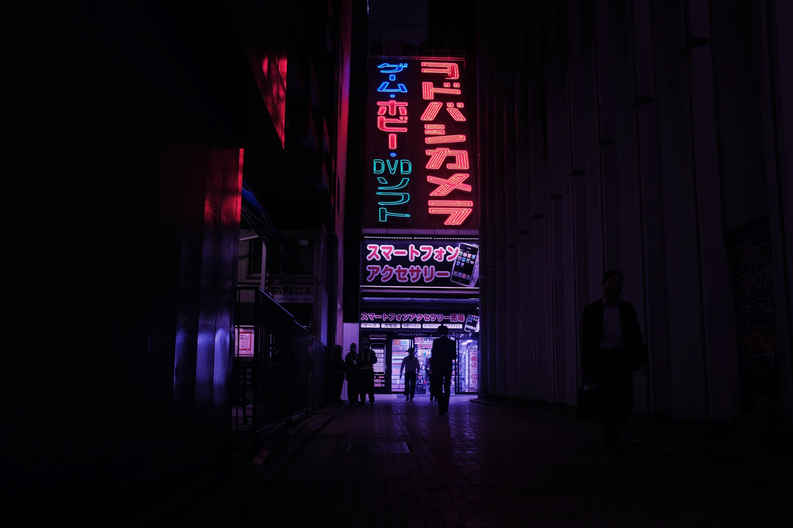

書き文字・手書き看板
職人が筆で描く、温かみのある看板。

看板の製作・施工 台東区松が谷（かっぱ橋）
昭和24年創業。看板のデザイン・制作・工事から、修理、LED化、メンテナンスまで。看板のことは何でもご相談ください。
看板の製作・施工 台東区松が谷（かっぱ橋）
昭和24年創業。看板のデザイン・制作・工事から、修理、LED化、メンテナンスまで。看板のことは何でもご相談ください。
ネオンサイン
夜の街で、目に留まる。
看板のイメージです
新規に看板を作られる方から、既存のデザイン変更やLED化・リニューアル・点検・撤去まで、あらゆるご要望をお受けしています。
店舗・オフィス・チェーン店・商業施設まで、さまざまなシーンで活用いただいています。かっぱ橋には浅草店とリサイクル展示場もあります。

職人が筆で描く、温かみのある看板。

取り付けから点検、撤去まで。

店先から館内まで、いろいろな看板を。

…
| 本店 | 平日 9:00〜18:00 |
|---|---|
| 土曜・祝日 | 11:00〜17:00 |
| 定休日 | 日曜 |
デザインのご相談やお見積もりは、お電話かメールでどうぞ。